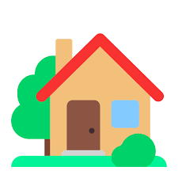

About Me
Welcome to my story! Scroll down to discover my background, studies, skills,
passions and my contact.

Origin
I was born in Marseille, a vibrant city in the south of France.
Growing up near the Mediterranean coast shaped my curiosity.
This early connection with the environment continues to influence how I work and think
between the outdoors and my studies.
Studies
From a technical degree (DUT) to a Bachelor's and now a Master's in Computer Science,
I've built a solid background in programming and data.
I quickly found a real passion for coding, problem-solving,
and making sense of data through statistics.
Skills
I’ve built solid technical skills in Python, R, SQL, and Java, and I’m
confident using tools like Excel (VBA), RStudio, and Figma.
With an analytical mindset, adaptability, and a collaborative spirit,
I’m always eager to learn and take on new challenges.
Passions
Outside of data, I love diving into books, be it in French or English
to discover new ideas and stories.
I enjoy keeping up with tech trends,
and I have a soft spot for the creativity of the Lego universe.
Oh, and yes… I proudly hold a Mario Kart license 😄
Contact
Let’s stay in touch! I’m always open to new opportunities, collaborations, or simply
connecting with people.
Check out my LinkedIn profile or grab a copy of my CV below.
Projects
Contenu de la section projets...
Experience
Contenu de la section expérience...